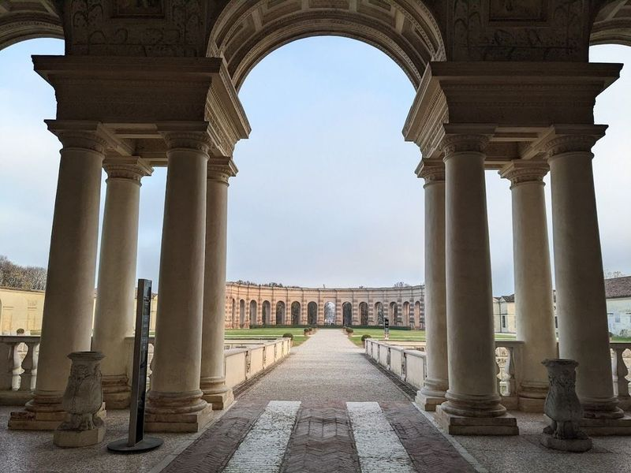
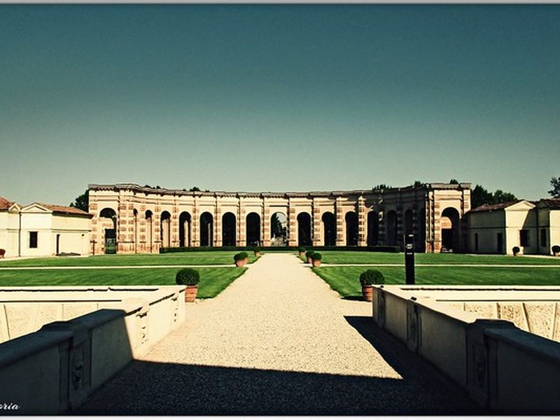
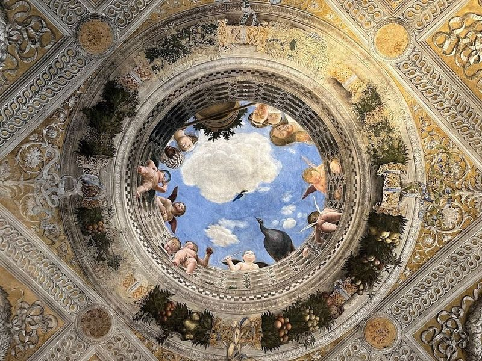
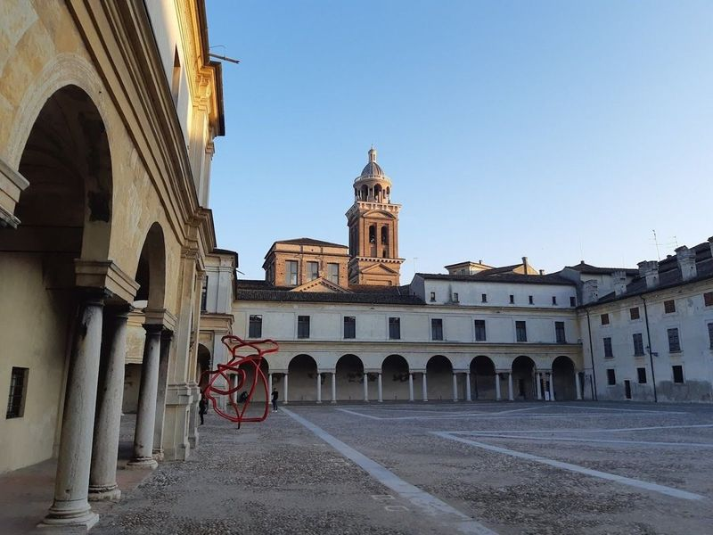
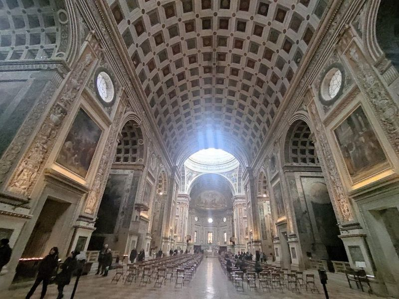
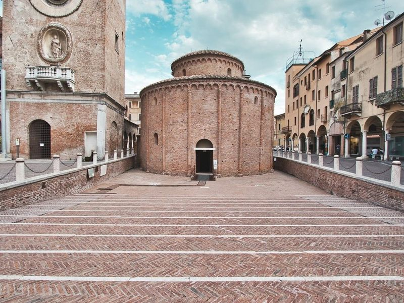
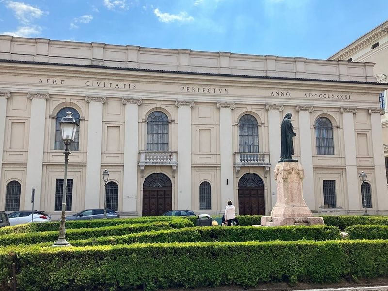
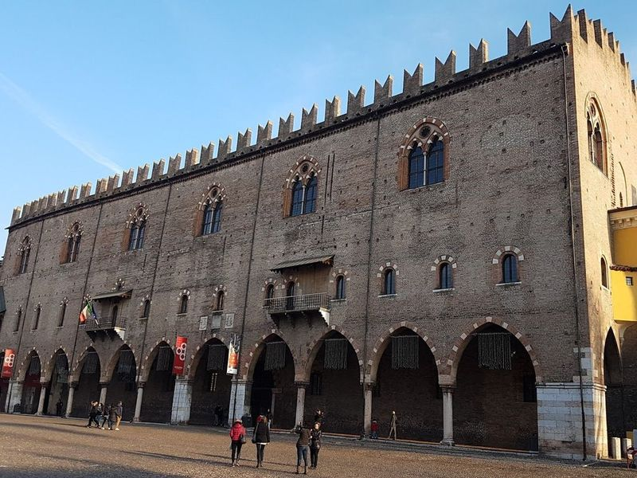
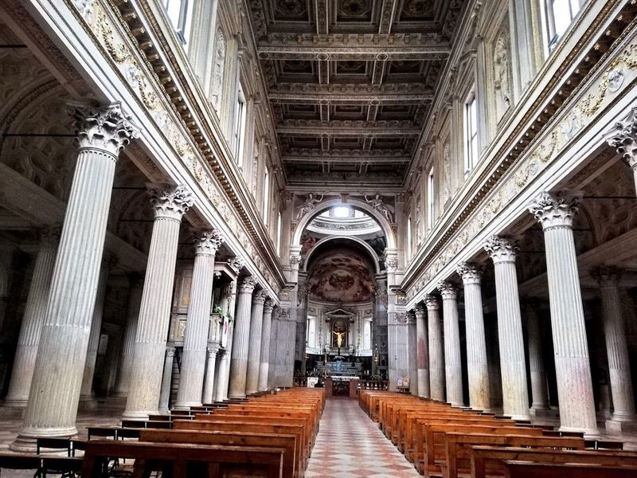
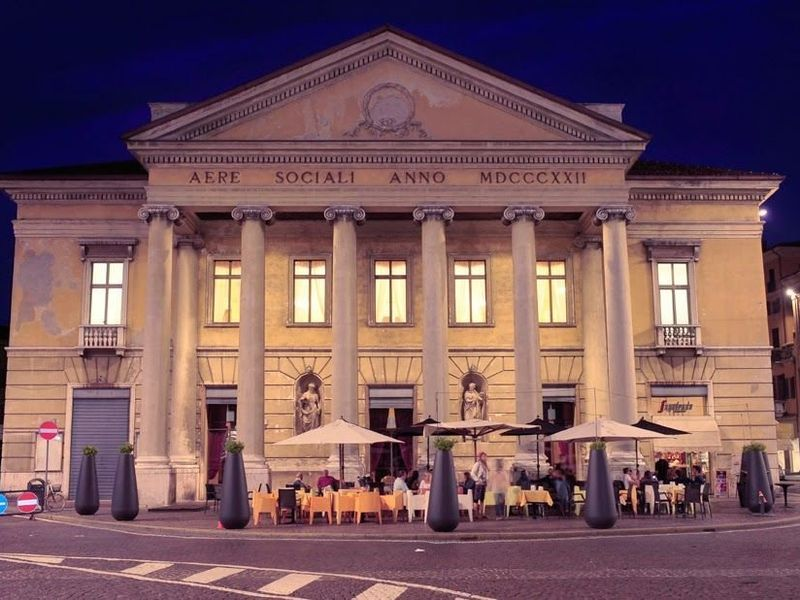

Explore Mantua
A Brief History
Mantua lies on islands in the Mincio River where the Gonzaga family ruled from 1328 to 1707, transforming the city into a Renaissance court that employed Mantegna, Giulio Romano, and Rubens. The Ducal Palace, Te Palace, and fortified bridges express dynastic ambition within a lagoon landscape south of Lake Garda. Austrian then Italian rule followed, leaving opera traditions, sulphur springs, and a historic centre recognised for its Gonzaga-era frescoes and urban plan.
Attractions Map
Top Sights & Activities

Te Palace
in the heart of Mantua, Italy, Te Palace is a Renaissance gem that captivates travellers with its whimsical interiors and striking erotic frescoes. Designed by the talented architect Giulio Romano as a retreat for the Maggiore family, this palace has evolved into a cultural hub showcasing art and history.

Te Park
The site is catalogued as a park. The site is catalogued as a park. The site is catalogued as a park. Te Park is listed among principal sites for Mantua within Italy. Municipal and regional heritage listings document its place in the historic centre and travellers routes through Mantua.

Castello di San Giorgio
Castello di San Giorgio is a 14th-century fortress once owned by the Gonzaga family and features a room adorned with frescoes painted by Andrea Mantegna. The city of Mantua boasts several secular landmarks, including the ducal palace, Palace of Te, Ragione Palace, and numerous other palaces and mansions. Cultural institutions in the city include Accademia Virgiliana, a valuable library founded by Maria Theresa, and the State Archives.

Palatine Basilica of Saint Barbara
The Palatine Basilica of Saint Barbara, located just a 12-minute walk from the city center, was once the exclusive church for the noble families residing in the Palazzo Ducale di Mantova. Designed by Bertani, this sacred building is not only a place for religious ceremonies but also serves as a venue for cultural events and concerts due to its perfect acoustics.

Basilica di Sant'Andrea
Basilica di Sant'Andrea is an impressive Renaissance church known for its vast vaulted interior and a reliquary that is believed to contain Christ's blood. The basilica was constructed by Andrea Mantegna, a renowned court painter, and Leon Battista Alberti, a prominent Renaissance architect. The church showcases the new Renaissance humanist style and stands as a triumphant display of their work.

Rotonda di San Lorenzo
In the heart of Mantova lies the Rotonda di San Lorenzo, an ancient round church with Romanesque architecture dating back to the 11th century. This historic landmark is just one of many notable churches in the city, including the restored Rotonda of San Lorenzo and others like San Sebastiano and San Francesco.

Teatro Scientifico del Bibiena
The Scientific Bibiena Theater, also known as Teatro Bibiena or Teatro Scientifico dell'Accademia, is an 18th-century neoclassical masterpiece located in Mantua. Designed by architect Antonio Galli Bibiena, the theater boasts a bell shape with numerous columns and balconies, showcasing elegant proportions. It holds historical significance as the venue where Wolfgang Amadeus Mozart performed at just 14 years old, marking the start of his international career.

Ducale Palace
Ducale Palace, a Renaissance fortress and the former residence of the Gonzaga family, is an highlight In Mantua. This palace boasts an impressive collection of frescoes by renowned artists like Mantegna and Pisanello, alongside exquisite tapestries attributed to Raphael. As wander through its numerous rooms filled with treasures, be captivated by painted ceilings that seem to tell stories from another era.

Cattedrale di San Pietro
Cattedrale di San Pietro is a cathedral located in Mantova, Italy. It boasts a Baroque facade, Romanesque bell tower, and Gothic elements. The cathedral dates back to the late 14th century and has undergone various expansions and renovations over the years. travellers can admire the interior artwork, including a coffered ceiling, pipe organ, and frescoed dome that were restored by Giulio Romano.

Teatro Sociale di Mantova
Teatro Sociale di Mantova is a classic and place in the city, where meet friendly locals. The atmosphere is superb, especially since it shares its space with a lovely cafeteria that has been recently refurbished. This delightful spot is open from early morning until after dinner, except on Mondays. It's a great place to savor traditional cake and coffee while enjoying the dog-friendly environment.